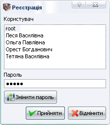
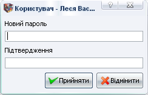

ТКЕнерго менеджер
Домашня <-> ТКЕ абонент <-> ТКЕ організації <-> ТКЕ асистент <-> Контакти
|
ТКЕнерго менеджер |
Домашня <-> ТКЕ абонент <-> ТКЕ організації <-> ТКЕ асистент <-> Контакти |
|
АВТОРИЗАЦІЯ
Для захисту даних програми від несанкціонованого доступу безпосередньо з вікна програми використовується система авторизації. Програма має визначене число користувачів, кожному з яких присвоєний відповідний рівень доступу до даних програми (зміна, читання, роздрук інформації). При завантаженні програми автоматично вмикається найнижчий рівень доступу до даних на якому користувач може лише переглянути рахунок необхідного абонента. А зареєструвавшись користувачем, який може “все”, отримає доступ до усіх можливостей програми. Але для реєстрації необхідно вибрати меню Програма->Зареєструватись. При цьому з'явиться вікно

З віконечка Користувач вибираємо користувача, а у віконечку Пароль вносимо наш таємний пароль. Далі клікаємо на Прийняти або просто тиснемо Enter. Тоді якщо було внесено вірний пароль завантажиться відповідний профіль користувача у відповідності до його рівня доступу.
Для зміни пароля після внесення старого пароля тиснемо замість Прийняти кнопку Змінити пароль. Якщо пароль було внесено правильно відкриється наступне вікно:

У ньому вносимо Новий пароль, його Підтвердження і тиснемо Прийняти. Тоді якщо новий пароль і його підтвердження співпадуть програма запише його до бази даних. Не забудьте його запам'ятати і користуйтеся програмою на здоров'я.
УВАГА!!! При реєстрації потрібно мати на увазі, що для програми велика і мала букви це два різні символи, тому пароль і пАРОЛь – це два різні паролі. Також не забувайте вносити пароль ввімкнувши саме ту мову, на якій пароль був внесений до бази даних.
|
© 2007 Компанія “АбонПро” |
|
ТКЕнерго менеджер 1.0.1 |